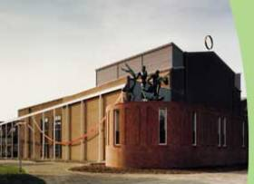
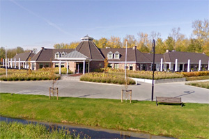

Locatie
|  |  |  |
|
Speellocatie Emmeloord: Gespeeld wordt in de beurszaal. Hier vindt u een routeplanner. Bekijk de locatie in Streetview. |
Speellocatie Urk: Hier vindt u een routeplanner. Bekijk de locatie in Streetview. |
Onderkomen Spelers: Hier vindt u een routeplanner. Bekijk de locatie in Streetview. |